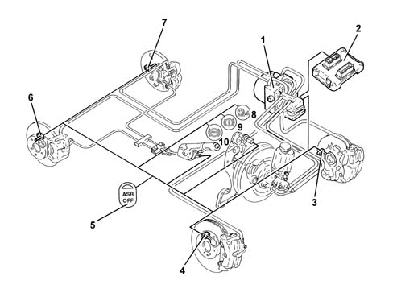
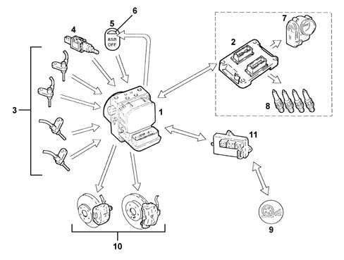
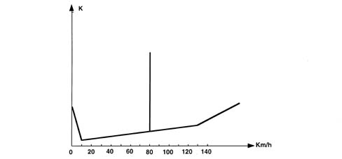
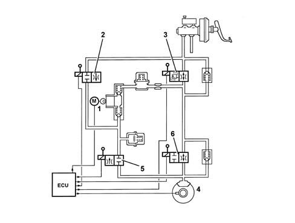
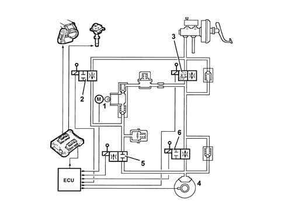
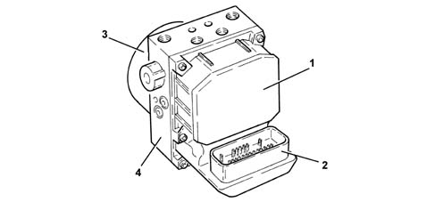
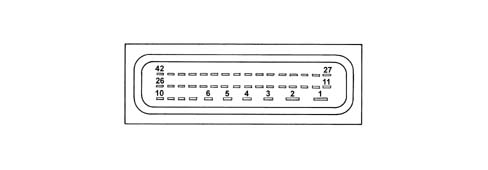
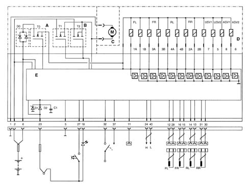
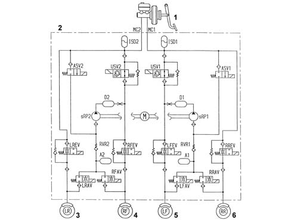
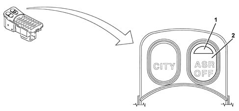

3350A anti - spin regulation devices
- Path
- Descriptions > 33 BRAKING SYSTEM > 3350 DRIVE CONTROL' > 3350A anti - spin regulation devices
- Kind
- system description
- Applies to
- engines: 1.6 TS, 2.0 TS; all production periods
- Interactive page
- https://sloeber94.github.io/elrnDB-a147/en/#/3022487
Applies to: engines: 1.6 TS, 2.0 TS; all production periods
SPECIFCATIONS
GENERAL VIEW

2 - Engine management control unit 2 - Engine management control unit 3 - Front left sensor 4 - Front right sensor 5 - ASR off button 6 - Rear right sensor 7 - Rear left sensor 8 - ASR warning light 9 - EBD warning light 10 - ABS warning light
Specifications
Function
This system carries out all the normal anti-lock and brake distribution functions of the ABS 5.7 with EBD and also ensures the following:
- Acceleration Slip Regulation (A.S.R.)
- engine braking torque regulation (M.S.R.)
- differential lock via action on the brakes (T.C.)
The functions are ensured by adjusting drive torque and applying a braking force to one or both drive wheels.
If one or both drive wheels tend to slip during acceleration, the control unit orders the engine control unit to reduce the torque transmitted by the engine to the wheels and almost simultaneously brakes the wheel or wheels without the driver having to do anything.
If the wheels tend to lock during hard deceleration, the ABS control unit requests the engine control unit to adjust engine braking toruqe to prevent car stability.
The system can be cut out by activating a button located on the console.
A led comes on on the button and a message is displayed on the instrument panel DOT matrix to indicate deactivation of the ASR/MSR.
The button warning light comes on and the DOT matrix message is repeated to indicate system cut-out due to a fault recorded by the control unit.
ASR/MSR intervention is indicated by the warning light on the dashboard flashing.
Each time the vehicle is started up the ASR/MSR function is activated, even if the ignition has been turned off with the function deactivated.
Components
Structure
The system consists of:
- an electronic control unit built into the hydraulic control unit
- a hydraulic control unit which modulates the braking pressure acting on the brakes by means of twelve solenoids regardless of the driver's actions
- four ACTIVE sensors
- special wiring.
OPERATION
Operating principle
Introduction
The system processes the signals coming from the active sensors, the brake light switch and the button for switching the A.S.R. function on/off.
It continually compares the speed of wheels on the same side of the car (Front right with Rear right - Front left with Rear left) and causes the ASR to cut in when a speed difference in excess of 2-6 km/h (cut-in threshold) is detected between wheels on the same side. The control unit turns on the MSR function when it detects an excessive difference between the front and rear axles because the front wheels tend to slow down too much compared to the rear wheels.
The ABS/ASR control unit communicates continuously with the engine control unit via the C-CAN line.
The ASR function is active under all car speed conditions. Braking action is cut out after 80 km/h.

1 - A.B.S./A.S.R. control unit 2 - Engine control unit 3 - Wheel rpm sensor (active) 4 - Brake pedal switch 5 - A.S.R. on/off button 6 - A.S.R. on/off LED 7 - Motorised throttle body 8 - Ignition system (advance adjustment) 11 - A.S.R. warning light on dashboard 10 - Brake calipers 11 - Body Computer
Operating strategy
Drive wheel slippage
Intervention - intervention times in road conditions with good grip (asphalt)
Torque reduction by the engine control unit by altering ignition advance - 6/100 s after the skid threshold is exceeded;
Further torque reduction by reducing throttle opening (by the engine control unit with motorized throttle body) - after 15/100 s;
Hydraulic system intervention (braking force on drive wheel) - after 2/10 s.
Operation under conditions of poor grip
The system is able to detect this situation by comparing drive wheel acceleration with torque transmitted by the engine (engine load via engine control unit).
The system performs in the same way as when both drive wheels are in road conditions with good grip (asphalt) and the cut in thresholds are at the lower limit.
Only one drive wheel slipping.
Intervention-intervention times
Torque reduction by the engine control unit by altering ignition advances - 6/100 s after the threshold is exceeded;
Further torque reduction by reducing throttle opening (by the engine control unit with motorized throttle body) - after 15/100 s.
Effect on hydraulic system, braking action is exerted on the slipping wheel to give the differential a resistive force on the side with poor grip (T.C.)
This resistive force allows the differential to transmit an equal torque with good grip.
One wheel slipping on a bend with good grip (asphalt).
The system detects the presence of a bend from the rear wheel speed (drawn).
It implements the same intervention procedures described for when only one drive wheel is slipping; the cut-in thresholds are increased to the upper limit. The torque reduction is applied gradually.
One wheel slipping on a bend with poor grip (snow or ice).
It implements the same intervention procedures described for when only one drive wheel is slipping; the cut-in thresholds are increased to the lower limit. The torque reduction is accentuated (to ensure good car lateral containment).
Modulating braking torque with engine decelerating
Car instability during deceleration with poor grip
The system recognises the condition from engine load, front and rear wheel speed and brake pedal sensor. In this case, drive torque is increased when the engine control unit cuts in to open the motorised throttle. This overcomes the natural instability of the car due to the engine braking torque with poor grip.
Cutting out the asr/mrs system
The ABS and EBD functions remain active if the system is cut out using a button on the panel, as it advisable if the cars are on certain surfaces (deep snow, deep mud, deep sand or gravel), or with chains on the drive wheels.
Cut-in thresholds
Cut-in threshold differences, from 2 to 6 km/h, depend upon environmental factors. Some conditions are described in the operating strategies. Others are:
- high acceleration, thresholds high.
- car speed (see graph), tyre type (normal or winter). with winter type and good grip, high level threshold, with winter tyres and poor grip threshold low. The system is able to detect this situation by comparing drive wheel acceleration with torque transmitted by the engine (engine load via engine control unit).

K, Slipping threshold
Asr/msr system failure
If the ABS system is faulty, the ASR system is also disabled. The ASR system is cut out with the following faults:
- Engine C-CAN message errors
- C-CAN bus error
The control unit activates warning lights on the control panel and button when these anomalies occur.
The ASR warning light strategy is as follows:
- with the A.S.R. on, the warning light in the dashboard is off and the LED on the button is off;
- with the A.S.R. operating, the warning light on the dashboard is intermittent and the LED on the button is off;
- with the ASR off, the warning light on the control panel is on, the warning light on the button is on and a message is displayed on the DOT matrix to indicate that the ASR is not activated
- when the ASR is faulty, the panel and button warning lights are on and an anomaly message is displayed on the DOT matrix.
The warning lights are governed by the ABS control unit by means of a C-CAN network as with the ABS with EBD.
Hydraulic system operation
The hydraulic unit on the version with A.S.R. has 4 additional solenoid valves.
The inlet solenoid valve (normally closed), when activated, can receive the additional quantity of fluid required to increase the pressure and brake the wheel/s.
The operating solenoid valve (normally open), when activated, allows the modulated pressure produced by the actual pump, necessary for the operation of the A.S.R., to be maintained in the pump-brake caliper circuit.
When the ASR TC function is not on, the ECU:
- does not supply the (N.C.) inlet solenoid valve (2);
- does not supply the (N.A.) operating solenoid valve (3).
In this way, the system operates like the Bosch 5.7 ABS 3340A abs check/adjustment devices.

1 - Pump 2 - Inlet solenoid valve 3 - Pilot solenoid 4 - Brake calipers 5 - De-pressurizing solenoid valve 6 - Pressuring solenoid valve
When the ASR/TC function is switched on, the electronic control unit:
- supplies the hydraulic pump (1)
- supplies the (N.C.) inlet solenoid valve (2)
- supplies the (N.A.) operating solenoid valve (3).
Therefore the pressure generated by pump (1) then reaches the brake calipers and is modulated, upon a command by the electronic control unit, by the de-pressurzing (5) and pressurizing (6) solenoid valves.

1 - Pump 2 - Inlet solenoid valve 3 - Pilot solenoid 4 - Brake calipers 5 - De-pressurizing solenoid valve 6 - Pressuring solenoid valve
COMPONENT DESCRIPTION
Electrohydraulic unit
Composition
Structure
The hydraulic unit consists of a control unit and a hydraulic control unit

1 - Electronic control unit 2 - Electrical connection 3 - Accelerator pump motor 4 - Hydraulic unit casing
Electronic control
Specifications
Function
The electronic control unit is responsible for:
- downloading data from the wheel rpm sensors
- storing control parameters defined during the preparation of the vehicle
- storing the control software
- processes downloaded data
- controls the braking process
- detecting failures at the braking system components
- storing fault codes and activating ABS/EBD/ASR warning lights
- transmitting and receiving data via the diagnostic connector
- communicating with the engine control unit
- controlling the ASR/MSR process
- sending and receiving data via the C-CAN line

1 - Power earth 2 - +30 power source 3 - N.C. 4 - N.C. 5 - Signal earth 6 - +30 power source 7 - N.C. 8 - N.C. 9 - N.C. 10 - N.C. 11 - Diagnostic line K 12 - Front left sensor signal 13 - Rear left sensor positive 14 - Rear left sensor signal 15 - Front right sensor positive 16 - Front right sensor signal 17 - N.C. 18 - Passive ASR warning light 19 - N.C. 20 - N.C. 21 - N.C. 22 - N.C. 23 - +15 power source 24 - CAN H line 25 - N.C 26 - N.C. 27 - Passive ASR switch 28 - Front left sensor positive 29 - N.C. 30 - Rear right sensor positive 31 - Rear right sensor signal 32 - N.O. brake button 33 - N.C. 34 - N.C. 35 - N.C. 36 - N.C. 37 - Vehicle speed VSO (recovery) 38 - N.C. 39 - N.C. 40 - CAN L Line 41 - N.C. 42 - N.C.
CIRCUIT DIAGRAM

A - Solenoid relay B - Pump motor C - Pump motor D - Valve unit E - Electronic control unit FL - Front left sensor FR - Front right sensor RL - Rear left sensor RR - Rear right sensor 1A-1B - Left front wheel solenoid 3A-3B - Left front wheel solenoid 4A-4B - Left rear wheel solenoid 2A-2B - Right rear wheel solenoid 5 - Pilot solenoid 6 - Intake solenoid 7 - Pilot solenoid 1 8 - Intake solenoid 1
Hydraulic control unit
Specifications
Function
Responsible for modulating the pressure of the fluid at the brake calipers via two solenoid valves with the following stages:
- brake fluid pressure increase
- brake fluid pressure maintenance
- brake fluid pressure discharge.
Composition
Structure
The electro-hydraulic control unit consists of:
- twelve two-way solenoid valves
- a dual circuit electric recovery pump
- two low pressure accumulators
- two high pressure accumulators
The letters indicating to which caliper and to which brake pump outlet they should be connected at stamped on the control unit at each outlet:
- RR = to the right rear brake (pipe marked with a light blue coloured band)
- LR = to the left rear brake (pipe marked with a green coloured band)
- RF = to the right front caliper (pipe marked with a yellow coloured band)
- LF = to the left front caliper (pipe marked with a white coloured band)
- MC1 = from the main circuit/flange side pump (pipe marked with a black or pink coloured band when the pipe polyammide resin is black)
- MC2 = from the secondary circuit/front pump (pipe marked with a brown coloured band).

1 - Brake servo pump 2 - Hydraulic control unit 3 Rear left wheel 4 - Front right wheel 5 - Front left wheel 6 - Rear right wheel
Active sensors
Specifications
For active sensors see ABS system 3340 A(B.S. ANTI-LOCK BRAKING SYSTEM .).
ASR de-activation/activation button
Function
Deactivates the ASR/MSR system and comes with indicator LEDs.
The button is built into the central panel

1 - Led 2 - Deactivation button